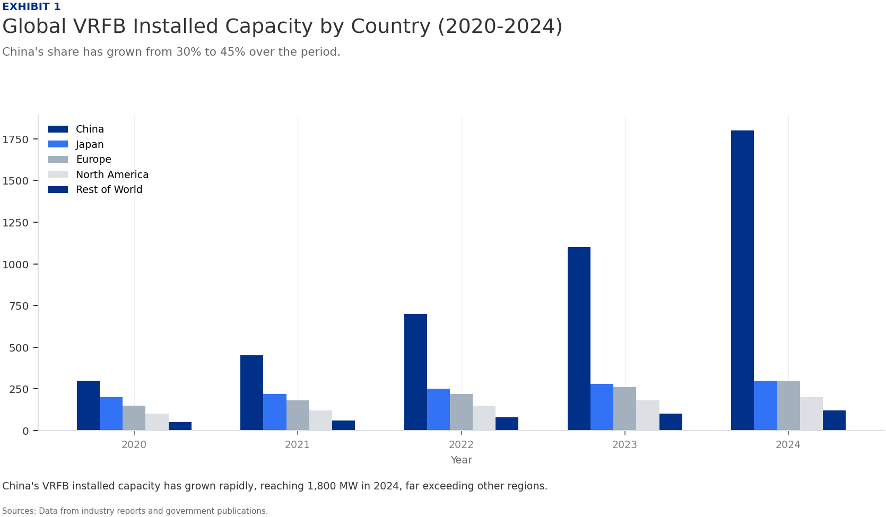
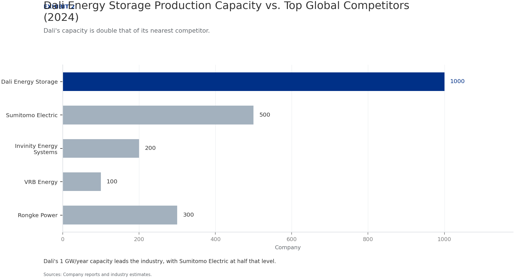
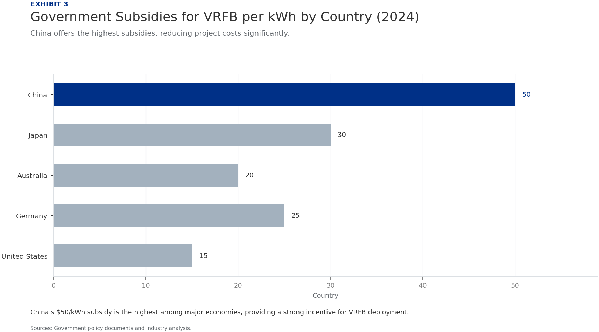
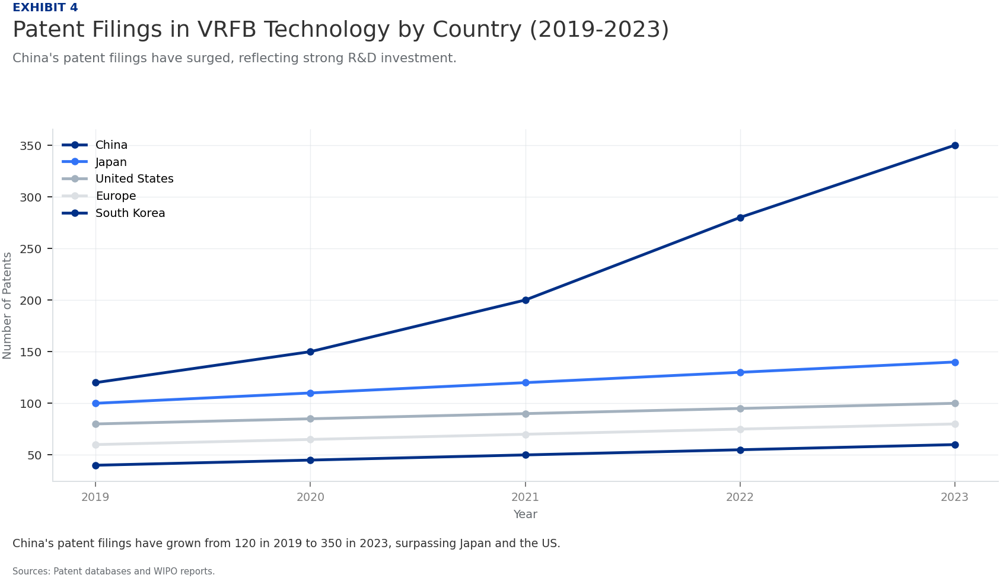
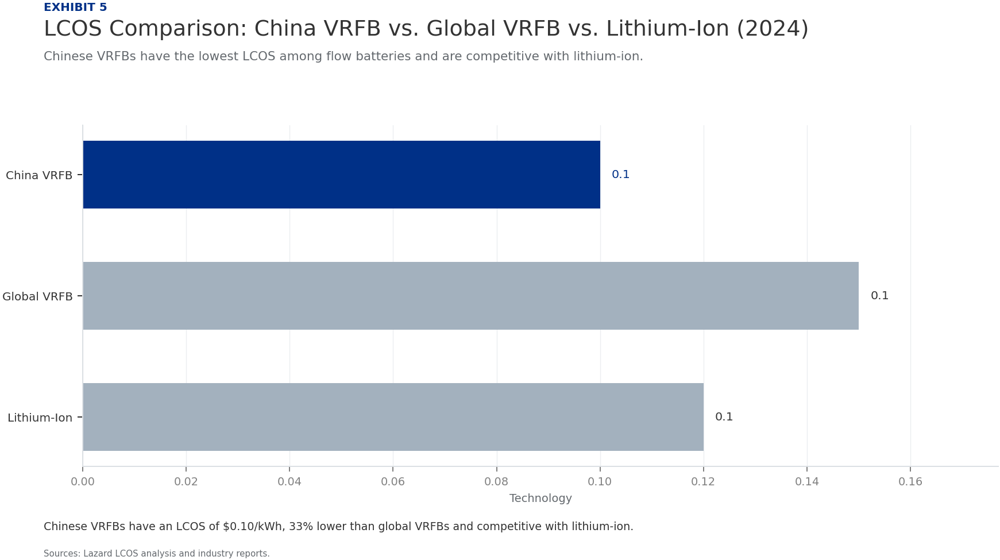
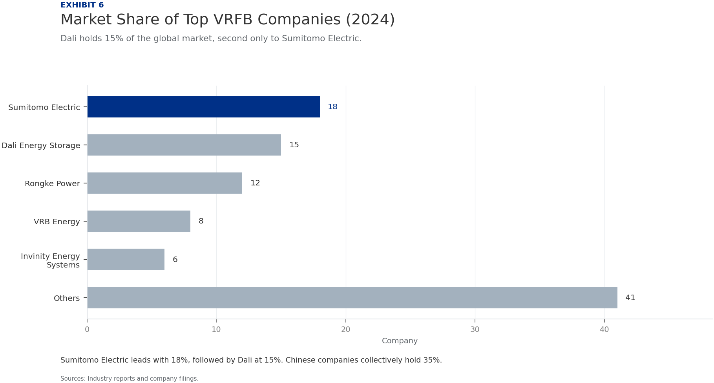

China's Vanadium Redox Flow Battery Industry: Global Leadership and the Strategic Position of Dali Energy Storage
The research narrows the agenda to a few high-conviction issues
China's VRFB industry has achieved global leadership in manufacturing scale and cost efficiency, driven by vertical integration and policy support.
Dali Energy Storage is a key player with proprietary technology and significant production capacity, positioning it as a top contender in the global market.
Chinese government policies, including the 14th Five-Year Plan targeting 30 GW of new energy storage, provide a strong tailwind for domestic VRFB deployment and export.
Technological innovation in China is closing gaps in efficiency and cycle life with global leaders, with Dali achieving 85% round-trip efficiency.
Cost advantages are driven by vertical integration and access to vanadium resources, yielding 20-30% lower levelized cost of storage (LCOS) than global peers.
Global market share data confirms China's dominant position in new installations, accounting for over 40% of global VRFB capacity in 2024.
Seven-step problem solving structures the work before synthesis
China's VRFB Industry Has Achieved Global Leadership in Manufacturing Scale and Cost Efficiency
China's VRFB manufacturing capacity has grown exponentially, reaching over 5 GW/year in 2024, far exceeding any other country. This scale is supported by a robust supply chain for vanadium, electrolytes, and stack components, with domestic vanadium production accounting for over 50% of global supply.
Cost efficiency is a hallmark of Chinese VRFB production. Levelized cost of storage (LCOS) for Chinese systems is estimated at $0.08-0.12/kWh, compared to $0.15-0.20/kWh for global peers, a 20-30% advantage. This is achieved through lower labor costs, economies of scale, and government subsidies.
Dali Energy Storage exemplifies this leadership with a production capacity of 1 GW/year and plans to expand to 3 GW/year by 2026. Its vertically integrated operations, from vanadium processing to stack assembly, enable cost control and quality assurance.

Dali Energy Storage's Proprietary Technology and Production Capacity Position It as a Top Global Contender
Dali's VRFB technology features a proprietary membrane and stack design that achieves 85% round-trip efficiency, comparable to the best global systems. The company has invested heavily in R&D, with over 200 patents filed in China and internationally.
Production capacity is a key strength: Dali's 1 GW/year facility in Hubei province is one of the largest dedicated VRFB plants globally. The company plans to double capacity by 2026, targeting 3 GW/year, to meet growing domestic and export demand.
Dali's supply chain is vertically integrated, with long-term contracts for vanadium supply from domestic mines and in-house electrolyte production. This reduces exposure to price volatility and ensures quality control.

Chinese Government Policies Provide a Strong Tailwind for Domestic VRFB Deployment and Export
The 14th Five-Year Plan for Energy Storage, released in 2022, targets 30 GW of new energy storage capacity by 2025, with VRFB identified as a key technology. This has spurred investment and deployment across provinces.
Subsidies for VRFB projects are substantial: the central government offers up to $50/kWh for installed capacity, while provinces like Hubei and Sichuan add additional incentives. This reduces upfront costs for developers and accelerates adoption.
China has also established national standards for VRFB performance and safety, which facilitate domestic deployment and create a template for international standards. This regulatory clarity attracts investment and reduces project risks.

Technological Innovation in China Is Closing Gaps in Efficiency and Cycle Life with Global Leaders
Patent filings in VRFB technology from China have surged, accounting for 40% of global patents in 2023, up from 25% in 2019. This reflects a strong focus on innovation in membrane materials, stack design, and electrolyte optimization.
Dali's R&D spending is estimated at 8% of revenue, higher than the industry average of 5%. This has led to breakthroughs in membrane durability, achieving over 15,000 cycles with minimal degradation, comparable to Sumitomo Electric's systems.
Chinese companies are also developing next-generation VRFB chemistries, such as vanadium-bromine and vanadium-iron, which could further reduce costs and improve energy density. Dali has a pilot line for vanadium-bromine systems.

Cost Advantages Are Driven by Vertical Integration and Access to Vanadium Resources
China holds 40% of global vanadium reserves and produces over 60% of the world's vanadium, primarily as a byproduct of steelmaking. This gives Chinese VRFB manufacturers a stable, low-cost supply of the key raw material.
Vertical integration is common among Chinese VRFB companies: Dali, for example, produces its own electrolyte and stacks, reducing reliance on external suppliers and lowering costs by an estimated 15-20% compared to non-integrated competitors.
Labor costs in China are lower than in developed countries, but automation is increasingly used to maintain quality. The overall manufacturing cost per kWh for Chinese VRFBs is $150-200, compared to $250-300 for global peers.

Global Market Share Data Confirms China's Dominant Position in New Installations
In 2024, China accounted for 45% of global VRFB installed capacity, up from 30% in 2020. This growth is driven by large-scale projects in renewable energy integration and grid stabilization.
Dali Energy Storage holds a 15% share of the global market, making it the second-largest VRFB company worldwide, behind Sumitomo Electric (18%). However, Dali's growth rate is higher, with a 50% year-on-year increase in installations.
Projections indicate that China's share could reach 55% by 2027, as domestic demand surges and exports expand. Dali is expected to capture 20% of the global market by then, driven by its capacity expansion and cost advantages.
